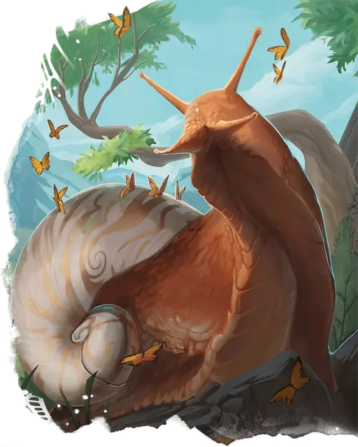

Гигантская улитка
Giant Snail
Большой Зверь, без мировоззрения

Класс Доспеха 11 (природный доспех)
Хиты 22 (4к10)
Скорость 10 футов, лазая 10 футов
| мод | спас | ||
|---|---|---|---|
| СИЛ | 15 | +2 | +2 |
| ЛОВ | 3 | −4 | −4 |
| ТЕЛ | 11 | +0 | +0 |
| мод | спас | ||
|---|---|---|---|
| ИНТ | 3 | −4 | −4 |
| МДР | 10 | +0 | +0 |
| ХАР | 3 | −4 | −4 |
Чувства тёмное зрение 60 футов, пассивное Восприятие 10
Опасность 1/4 (50 опыта)
Бонус мастерства +2
Особенности
Чувствительность к соли. Если улитка начинает свой ход в соприкосновении с фунтом или более соли, она получает 1к4 урона некротической энергией. Если действием обсыпать солью улитку, она сразу получит 1к4 урона некротической энергией и ещё 1к4 урона некротической энергией в начале своего следующего хода, если не спрячется в своей раковине.
Действия
Размашистый удар. . Рукопашная атака оружием: +4 к попаданию, досягаемость 5 фт., одна цель. Попадание: 5 (1к6 + 2) дробящего урона.
Защитная раковина. Улитка прячется в раковину, получая +4 КД до тех пор, пока не вылезет. Она может вылезти из раковины в свой ход бонусным действием.
Описание
Эти большие моллюски при испуге прячутся в своих прочных раковинах, и чересчур чувствительны к повреждениям от соприкосновения с солью.